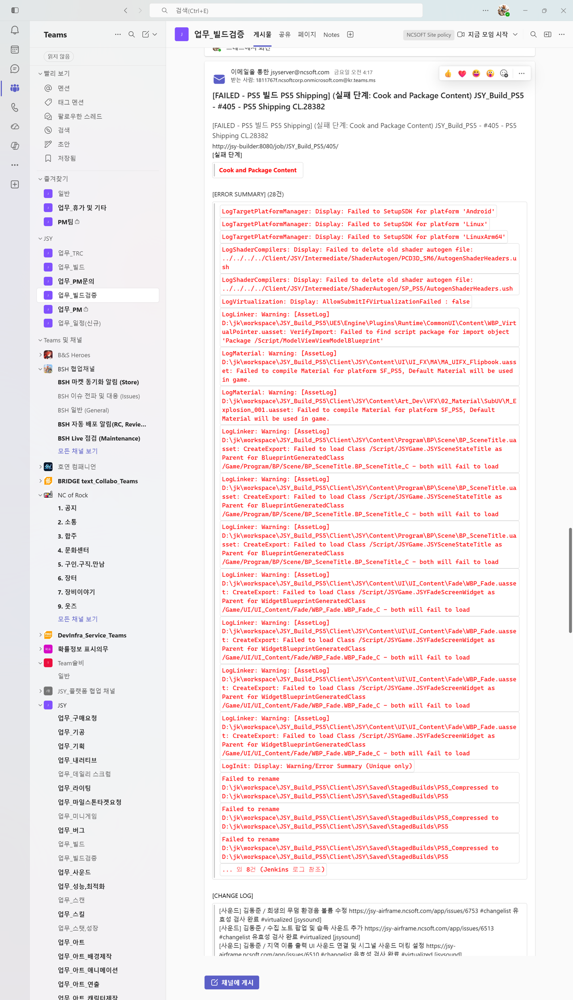
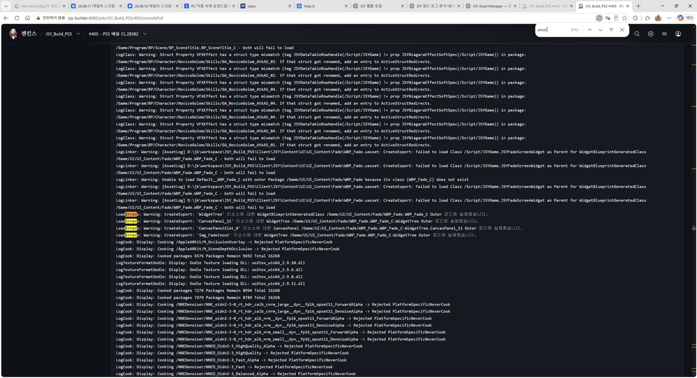
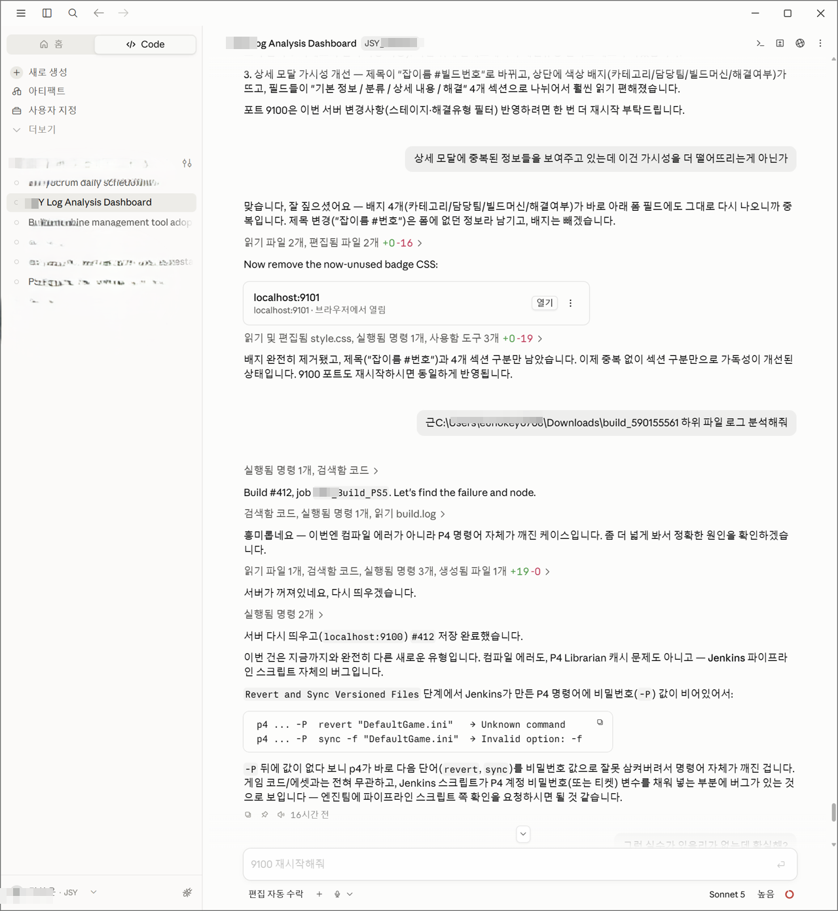
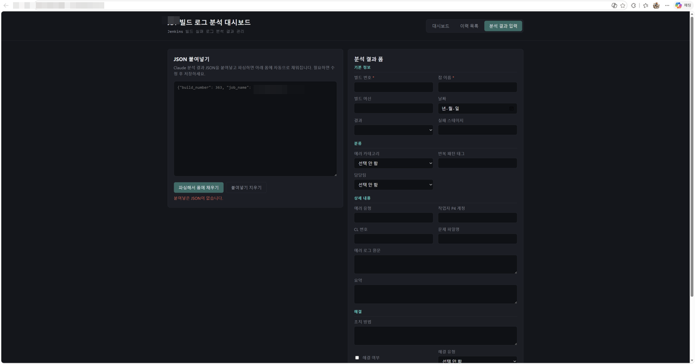
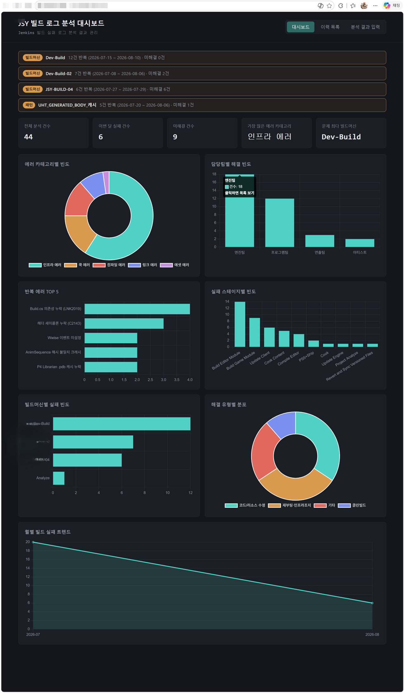
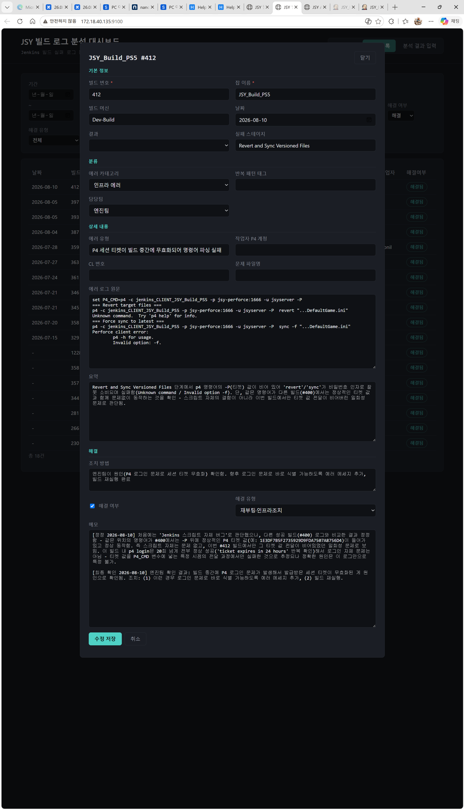

1
Problem · 문제 상황
수십 MB 로그를 사람이 직접 읽고 있었다
게임 개발 프로젝트는 Jenkins 기반으로 하루에도 여러 번 빌드가 돌아갑니다. 빌드가 실패하면 담당자가 콘솔 로그를 직접 열어 원인을 찾아야 했는데, 로그 한 건이 수십 MB에 달하는 경우가 많았습니다.
건당 30분+ 수동 분석
에러 메시지가 로그 중간에 묻혀 있어 찾는 것 자체가 일이었습니다
반복 에러인데 이력 없음
같은 유형의 실패가 반복돼도 이력이 없어 매번 처음부터 분석했습니다
통계적 파악 불가
어떤 팀, 어떤 빌드 머신에서 실패가 몰리는지 전혀 파악할 수 없었습니다

Teams 채널에 날아오는 빌드 실패 알림. 28건의 에러 요약이 떠있지만 실제 원인 파악은 Jenkins 로그를 직접 열어야 했습니다.

실제 Jenkins 콘솔 로그. "error" 키워드로 검색해도 5/12개가 분산되어 있어 전체 맥락을 파악하기 어렵습니다.
2
Solution · 해결 방법
Claude API로 로그를 구조화된 데이터로 변환
단순 키워드 검색(grep)으로는 "왜 났는지", "어느 팀에 전달할지"를 판단할 수 없었습니다. 로그를 읽고 원인을 파악하는 건 결국 자연어 이해가 필요한 작업이었고, Claude API가 이 역할에 적합했습니다.
Claude API에게 시킨 것은 단순합니다. 로그를 받아서 아래 항목을 JSON으로 반환하도록 설계했습니다.
빌드 실패 발생
→
로그 파일 업로드
→
Claude API 분석
→
JSON 구조화
→
대시보드 저장
설계 원칙은 하나였습니다. 확실하지 않으면 null로 남긴다. AI가 모르면 모른다고 하도록 설계했고, 잘못된 확신보다 정직한 불확실성이 낫다고 판단했습니다.

Claude Code에서 실제 빌드 로그를 분석하는 장면. P4 명령어 파싱 실패 원인을 추적하고 엔진팀 확인을 요청하는 조치까지 도출했습니다.

Claude 분석 결과 JSON을 붙여넣으면 에러 카테고리·담당팀·심각도·조치 방법이 자동으로 폼에 채워집니다.
3
Result · 결과
반복 패턴이 보이기 시작했다
이력이 쌓이면서 개별로 볼 때는 "또 났네" 하고 넘기던 에러들이 통계로 보이기 시작했습니다. 특정 빌드 머신에서 인프라 에러가 반복되는 것을 발견했고, 이는 하드웨어 점검이 필요한 신호였습니다.
44건
누적 분석 이력
이력 검색으로 "저번에 이 에러 어떻게 해결했지?"를 바로 찾을 수 있게 됐습니다
TOP 5
반복 에러 패턴 식별
Build.cs 의존성 누락, 헤더 세미콜론 누락 등 반복 패턴을 수치로 파악
자동
담당팀 라우팅
엔진팀·프로그래밍팀·연출팀·아티스트 중 자동으로 담당팀 추천
실배포
사내 운영 중
실제 팀이 사용하는 환경에 배포되어 현재도 운영 중입니다

대시보드 통계 화면. 에러 카테고리별 빈도, 반복 에러 TOP 5, 빌드 머신별 실패 빈도, 월별 트렌드를 한눈에 파악할 수 있습니다. 인프라 에러가 가장 많고 Dev-Build 머신에 실패가 집중됨을 확인했습니다.

개별 빌드 분석 상세 화면. 에러 원인, 담당팀, 조치 방법, 해결 유형까지 기록되어 동일 에러 재발 시 즉시 참조할 수 있습니다.
Insight
"AI 도구를 잘 만들려면 코딩 실력보다 문제 정의 능력이 먼저입니다.
어떤 정보를 추출할지, 불확실할 때 어떻게 처리할지를 먼저 정의해야 AI가 제대로 동작합니다.
현업을 아는 PM이 이 부분을 가장 잘 할 수 있다고 생각합니다."
어떤 정보를 추출할지, 불확실할 때 어떻게 처리할지를 먼저 정의해야 AI가 제대로 동작합니다.
현업을 아는 PM이 이 부분을 가장 잘 할 수 있다고 생각합니다."